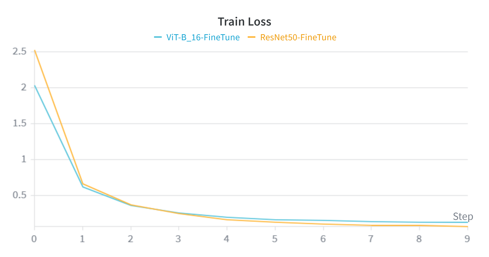
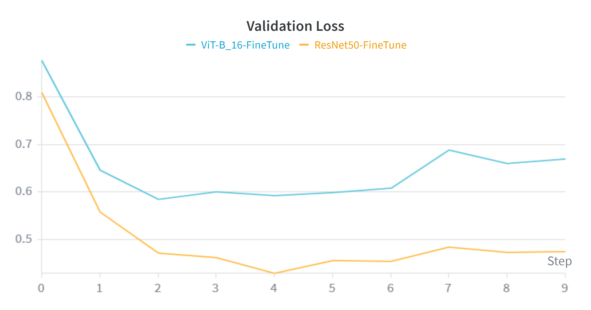
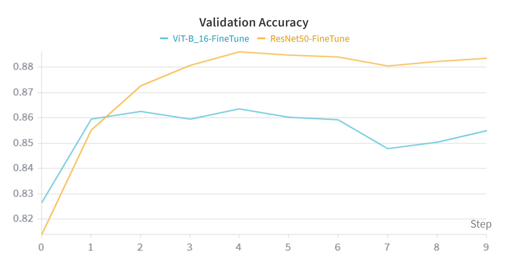
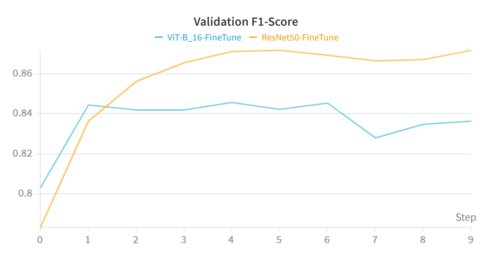

2. Training Dynamics (Weights & Biases)
Analyzing the learning curves reveals a distinct advantage for the Convolutional architecture over the Transformer on this specific dataset size.




- Convergence Speed & Stability: The orange line (ResNet50) consistently outperforms the blue line (ViT) across all metrics. ResNet50 converges to a lower loss and higher accuracy optimum around step 4.
- The "Data Hunger" Phenomenon: These charts perfectly validate our hypothesis stated in the Methodology section. Despite having over 3x the parameters (86M vs 25M), ViT struggles to generalize as effectively as ResNet50. The lack of CNN inductive biases (translation invariance) means ViT requires significantly more data than the ~30,000 images provided by Caltech-256 to fully map global context representations.